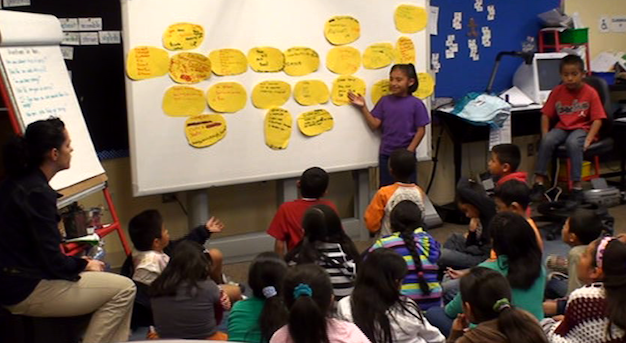

Responsive teaching refers to the practices of attending and responding to the substance of students' thinking. Instructional next moves arise out of the teachers' sense of what students have been saying and doing, and they often entail adapting plans and objectives within a particular lesson while still working toward larger learning goals. This website is a prototype of curriculum and professional development to support responsive teaching.

In a responsive teaching classroom, students are expected to articulate and defend their ideas in front of their classmates and the teacher.
| *The Responsive Teaching in Science website is a product of a project funded by the National Science Foundation, Grant No. 0732233 |